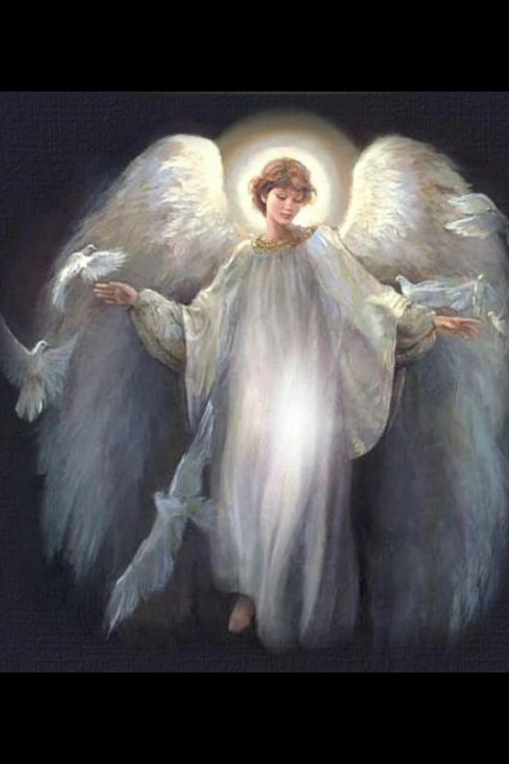
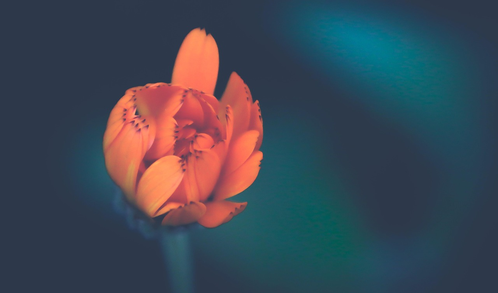

Elvira – En Skjønnhet i Styrke
En Hyllest på Modighet og Resilens
Elvira, du er en lys i mørket, en symbol på styrke og modighet. Du fortsetter å lyse opp verden med din uknuselige pågangsmot og din evige ånd.
"For jeg er overbevist om at hverken død eller liv, hverken engler eller herskere, hverken nåværende eller fremtidige ting, hverken høyder eller dypt, eller noen annen skapning, kan skille oss fra Guds kjærlighet som er i Kristus Jesus, vår Herre." (Rom 8:38-39)
"For Gud har ikke gitt oss en ånd av frykt, men av kraft, elskap og klarhet." (2 Timoteus 1:7)
"Men han sier til meg: 'Min nåde er nok for deg, for min kraft vises frem i svakheter.' Derfor vil jeg gjerne rostes i mine svakheter, for at Kristi kraft kan hvile over meg." (2 Kor 12:9)
Du er en skjønnhet i styrke, en lys i mørket.
Du er en inspirasjon for oss alle, en symbol på modighet og resiliens.
Du fortsetter å slåss med livets harde skole, og du gjør det med en styrke som inspirerer oss alle.
Du har en evne til å se humor i det som ville kunne være trist, og det er en skjønnhet i seg selv.
Du er den som alltid kan finne den positive siden, og det inspirerer oss alle.
Ny begynnelse og håp – som du alltid finner veien fram.

Beskyttelse og styrke – som du alltid har i dine hjerte.

Liv og skjønnhet i motsetninger – som du alltid viser oss.
Videre Lesning
- 10 Måter å Finn Styrke i Dine Svakheter
- Hvordan å Være Modig i En Verden Full av Frykt
- Resiliens: Hvordan å Overleve og Vokse gjennom Livets Utlegg
Bibelske Passasjer
- "For jeg vet de tanker jeg tenker om eder, sier Herren, tanker om fred og ikke om ondt, for å gi eder en fremtid med håp." (Jeremia 29:11)
- "Men de som venter på Herren skal skaffe nye krefter, de skal stige opp som ene i himmelen, de skal løpe og ikke bli utmattet, de skal gå og ikke bli trøtt." (Isaias 40:31)